Static, Dynamic, Intergenerational and Spatial Perspectives
CEE-M, Univ. Montpellier, CNRS, INRAE, Institut Agro
Depends on two characteristics: Rivalry and Excludability.
| Type of Good | Rivalry | Excludability | Examples |
|---|---|---|---|
| Private Goods | High | High | Food, clothing, personal devices |
| Club Goods | Low | High | Cinemas, private parks, toll roads |
| Public Goods | Low | Low | National defense, air, public parks |
| Common Pool Resources | High | Low | Fisheries, groundwater, forests |
Note
Behavioral and experimental economists have also made contributions and found mechanisms that can help to mitigate the tragedy and reduce the over-exploitation, like communication, sanctions, property rights, regulation/quotas or nudges.
Walker, Herr, Gardner & Ostrom (2000)
Each player chooses \(x_i\) to maximize their own payoff, but total extraction \(X\) increases costs for everyone, creating a social dilemma.
Each player maximizes their own payoff given the others’ decisions: \[ \max_{x_i} \ \pi_i(x_i, X_{-i}) = a x_i - b x_i^2 - x_i (c + kX) \]
where \(X = x_i + X_{-i}\)
First-order condition (FOC): \(a - 2b x_i - c - kX = 0\)
Assuming symmetry \(x_i = x\), \(X = nx\): \[ x_i^{Nash} = \frac{a - c}{2b + k(n+1)} \]
Maximize total group payoff \(\Pi = \sum_{i=1}^n \pi_i\)
\(\max_{x_1, \dots, x_n} \ \sum_{i=1}^{n} \left(a x_i - b x_i^2 - x_i (c + kX)\right)\)
Under symmetry \(x_i = x\), \(X = nx\), becomes: \[ \max_{x} \ n\left(a x - b x^2 - x(c + knx)\right) \]
FOC: \(a - 2b x - c - 2knx = 0\) \[ x_i^{Social} = \frac{a - c}{2b + 2kn} \]
With \(a = 0.383\), \(b = 0.001\), \(c = 0.005\), \(k = 0.005\), \(n = 4\): - \(x_i^{Nash} \approx 14\) tokens - \(x_i^{Social} \approx 9\) tokens
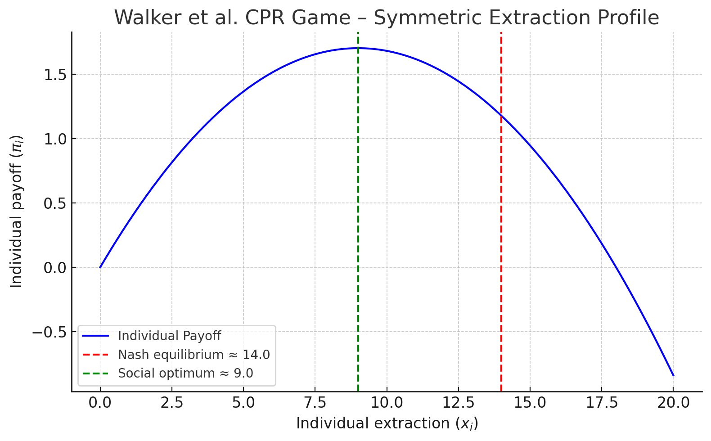
Dubois, D., Farolfi, S., Rouchier, J. & Nguyen Van, P., 2020. “Contrasting effects of information sharing on CPR extraction behaviour: experimental findings”. Plos One 15 (10): e0241212.
Investigate the impact of social information through voluntary sharing mechanisms on cooperative behavior in common-pool resources.
Two Mechanisms of Information Sharing: - Voluntary Disclosure (VD): Stakeholders choose whether to disclose their extraction level. - Free Disclosure (FD): Stakeholders choose whether to disclose and can determine the extraction level they display (which may differ from the actual level).
\(4\) players and a shared resource of \(40\) tokens.
Each player \(i\) chooses an extraction level \(x_i \in [0, 10]\).
Individual payoff function: \(\pi_i(x_i, X) = 3x_i - 0.01875 \cdot X^2\) where \(X = \sum_{j=1}^4 x_j\) is the total group extraction.
Key features:
Captures the essence of CPR dilemmas: Private incentives lead to overuse, while collective interest requires restraint.
| MD | VD | FD | |
|---|---|---|---|
| Voluntary sharing | No | Yes | Yes |
| Freedom to choose the value to be disclosed | No | No | Yes |
Conjecture 1: Individuals disclose extractions frequently due to: - Desire to signal cooperation (warm-glow effect). - Perception of a “socially appropriate” extraction level and descriptive norm.
Conjecture 2 (Voluntary Disclosure): 1. Disclosed extractions < Non-disclosed extractions. 2. Average extractions < Mandatory Disclosure. - Non-cooperators avoid making extractions public to limit influence on others. - Guilt or shame can deter non-prosocial behavior.
Conjecture 3 (Free Disclosure): 1. Disclosed extractions < Non-disclosed extractions. 2. Disclosed extractions < Actual extractions. 3. Average extractions < Mandatory Disclosure. - Cooperators likely to disclose accurate extractions; non-cooperators may hide actual values. - Some may signal optimal extractions to set a group norm. - Strategic false disclosures may erode trust, hindering norm formation and conditional cooperation.
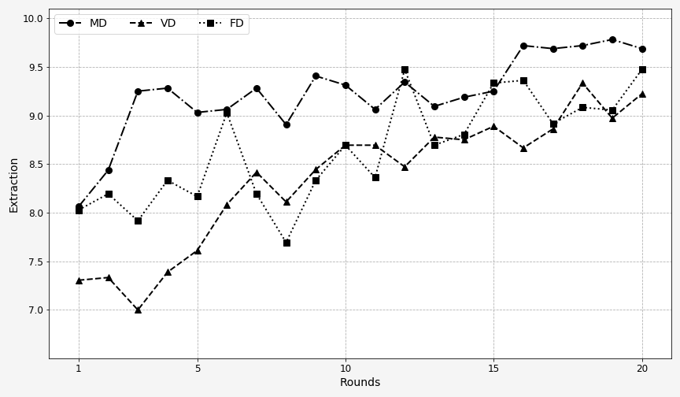
Information sharing is effective in reducing extraction:
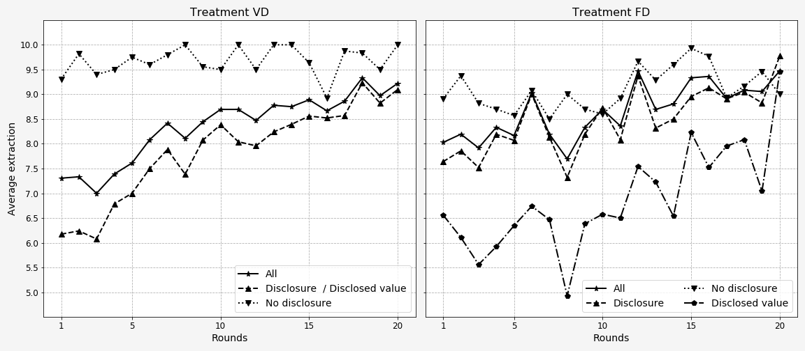
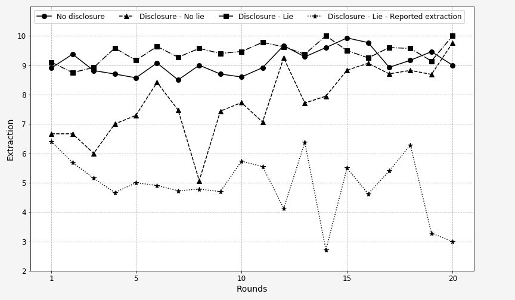
Strategic Misreporting: Players who misrepresented their extraction level extracted significantly more than those who reported their actual extraction or chose not to disclose.
Understanding of Social Optimum: These players appeared to recognize the social optimum (5 units) as a target extraction level.
Emergence of Strategic Behavior:
Effects of social information are mixed:
Implications:
Brugnach, M., Dubois, D. & Farolfi, S.,“The Power of Bonds: How the Quality of Relationships Within a Group Can Drive Collective Actions in Common Pool Resource Management”
Does the quality of relationships within a group impact collective management of common pool resources (CPRs)?
Strong, positive relationships within a group are likely to foster cooperation and responsible resource extraction.
We developed an effort task (counting ones in 10x10 grids of zeros and ones) with three different payoff schemes to shape relational quality:
In all three conditions: - Players shared the same 100 grids, displayed upon clicking numbers from 1 to 100. - Communication was allowed in each condition. - The task had a duration of 3 minutes.
The effort task
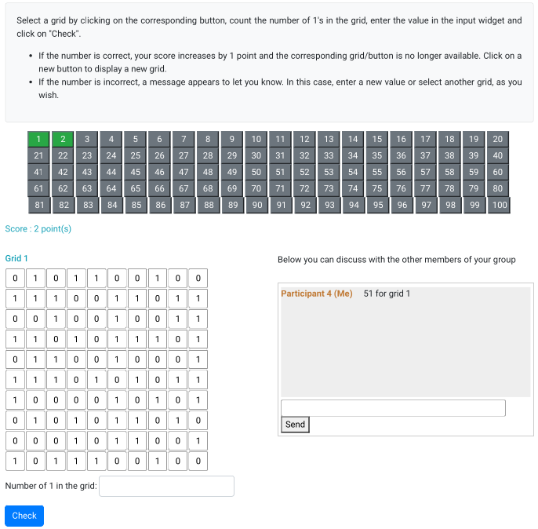
Walker, Herr, Gardner, and Ostrom (2000)’s game for 4 players, repeated for 10 rounds.
To evaluate relational quality within groups, a detailed questionnaire was administered:
Inclusion of Other in Self (IOS)
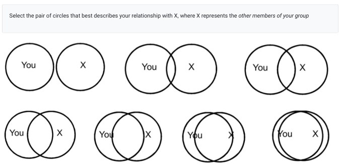
Hypotheses - H1 : Cooperative effort task enhances relational quality, while competitive task diminishes it. - H2: Higher relational quality leads to better management of CPRs; lower relational quality worsens CPR outcomes.
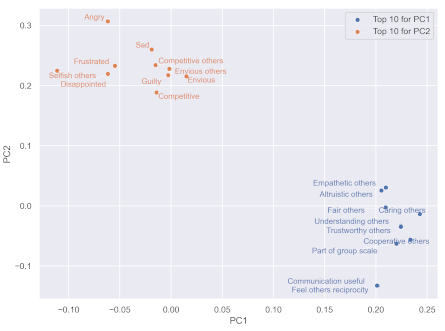
Players’ coordinates on main axes by treatment
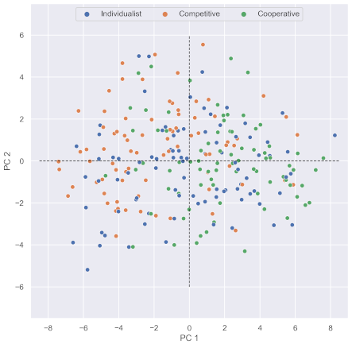
Cluster Visualization on PCA Components
Player distributions by clusters across main PCA axes.
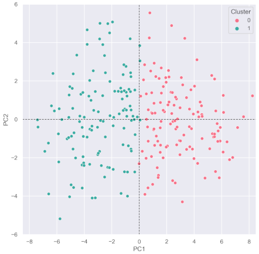
Analyze CPR extraction behavior in relation to group composition based on clusters.
Group Composition Types: - Defined by cluster labels assigned to each participant (Cluster-0 or Cluster-1). - Each group (4 players) categorized into three types: - Maj. 0: Majority of Cluster-0 participants (26 groups) - Maj. 1: Majority of Cluster-1 participants (25 groups) - Mix: Equal representation of Cluster-0 and Cluster-1 (11 groups)
This classification allows us to study how relational quality impacts CPR management, testing hypothesis H2.
Evolution of average CPR extraction depending on group composition
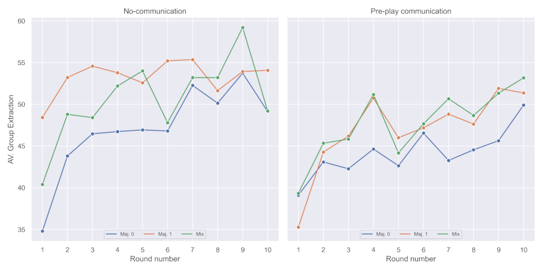
Based on Rubio & Casino (2003)
In the infinite horizon, the total discounted payoff is given by
\(\int_{0}^{\infty}e^{-rt} \left[ aw_i(t)-\frac{b}{2}w_i(t)^{2}-\max (0,\; c_{0}-c_{1}H(t))w_i(t) \right]dt\)
with \(\dot H(t)=R-\alpha(w_i(t)+w_j(t))\)
\(e^{-rt}\) is the discount factor (\(r\) is the discount rate), \(R\) is the natural recharge and \(\alpha\) is the return flow coefficient.
Each player’s extraction reduces the resource level, affecting not only their own future payoffs but also the other player’s future payoffs. This interdependence of decisions and outcomes, inherent in CPRs, is incorporated into this dynamic equation.
3 benchmarks
Choice of parameters such that theoretical paths are disctincts : \(H_0=15, R=0.56, a=2.5, b=1.8, c_0=2, c_1=0.1, r=0.005, \alpha=1\)
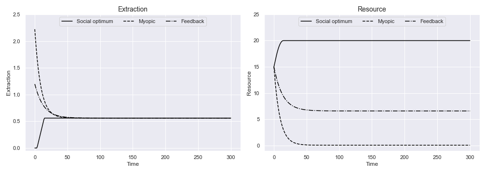
Continuous time - Extractions can be made at any instant and the resource evolves continuously. - Strict continuous time is not feasible in the lab, it’s necessary to discretize the model with a small discretization rate.
Discrete-time
In discrete time, extractions are made at specific intervals and the resource evolves from one interval to the next.
Djiguemde, M., Dubois, D., Sauquet, A. & Tidball, M., 2022. “Continuous Versus Discrete Time in Dynamic Common Pool Resource Game Experiments”. Environmental and Resource Economics 82, pp. 985-1014.
Does the nature of time (continuous vs. discrete) affect behavior in a dynamic common pool resource game?
Theoretical models often assume continuous time for dynamic CPRs, but experiments typically use discrete time.
Continuous time
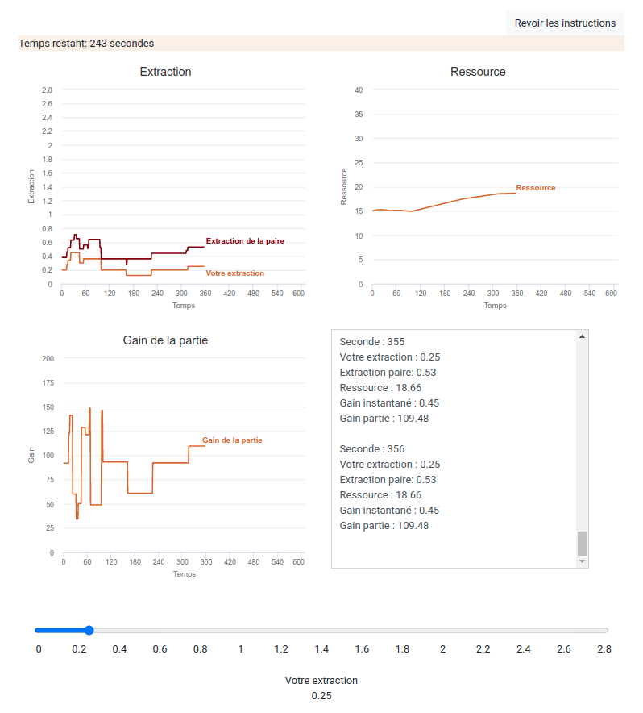
Discrete time
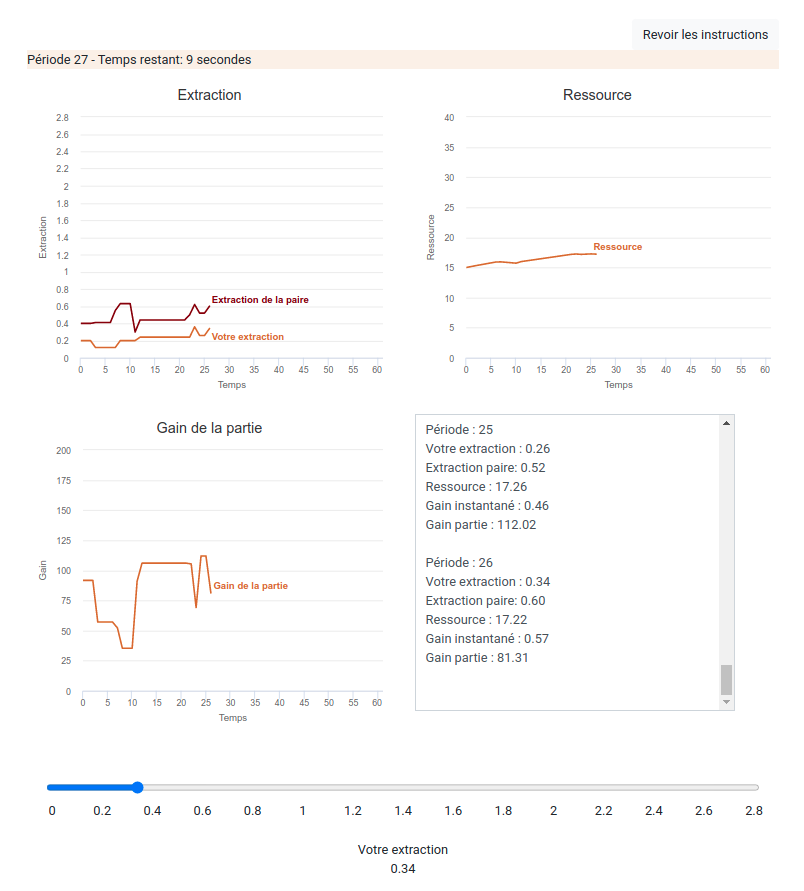
Evolution of the average resource level over time
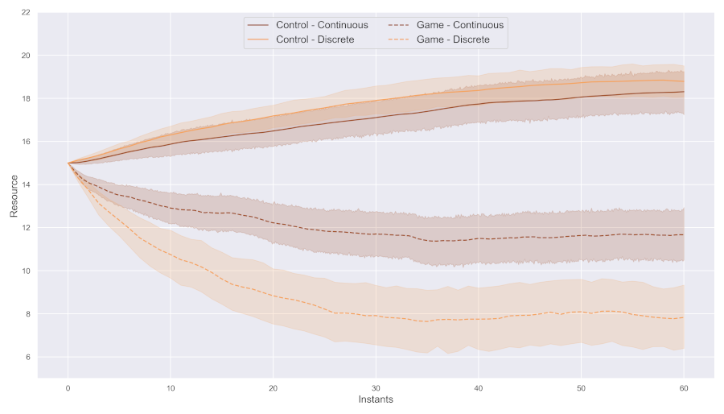
In the game
Davin, M., Dubois, D., Erdlenbruch, K. & Willinger, M., 2025. “Discounting and extraction behavior in continuous time resource experiments”. Resource and Energy Economics 84.
How different discounting periods affect behavior in a resource extraction experiment.
In dynamic games, discounting is typically based on a reference period.
Theory suggests no difference in optimal behavior based on the discounting reference period. However, if subjects revise their extraction plans, discounting period reference may influence decisions.
Note: in both cases we implement infinite horizon with the scrap value method, i.e. the future discounted gains are calculated assuming a constant extraction rate equal to the last extraction rate.
For a given payoff function \(G(E_t, R_t)\), where \(E_t\) is the extraction rate and \(R_t\) is the resource stock at time \(t\), the total discounted gains are calculated as follows (with \(\rho\) the discount rate):
z-Discounting: All payoffs are valued relative to the initial starting time \(t=0\): \[ GP_p^Z = \int_{t=0}^p e^{-\rho t} G(E_t, R_t) \, dt + \int_{t > p}^\infty e^{-\rho t} G(E_t, R_t) \, dt \]
p-Discounting: All payoffs are evaluated based on their value at \(p\), regardless of the starting point: \[ GP_p^P = \int_{t=0}^p e^{\rho (p - t)} G(E_t, R_t) \, dt + \int_{t > p}^\infty e^{-\rho (t - p)} G(E_t, R_t) \, dt \]
Relationship Between z-Discounting and p-Discounting: - Conversion Factor: \(GP_p^P = GP_p^Z \times e^{\rho p}\) - This factor \(e^{\rho p}\) scales the p-discounted gains relative to the z-discounted gains.
While both discounting methods aim to model long-term value, the choice of reference point (initial time vs. present time) affects perceived gain magnitude. This shift can influence behavior, especially in dynamic settings, as players may respond differently to nominally larger or smaller gains.
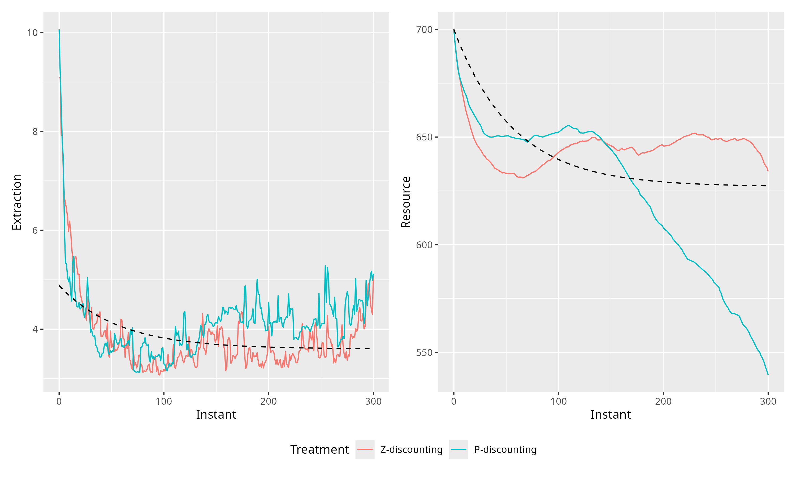
Other observations: - Subjects who followed optimal strategies showed no treatment effect. - Non-optimal subjects extracted more under p-discounting.
Djiguemde, M. Dubois, D. Sauquet, A. & Tidball, M., 2022. Individual and strategic behaviors in a dynamic extraction problem: results from a within-subject experiment in continuous time. Applied Economics, pp. 1-24.
We compare the observations to the theoretical behaviors, in a single agent situation (optimal control problem) and in a two-players game (differential game).
Optimal control problem (single player): - The optimal behaviour is when the player chooses their extraction to maximize their discounted net payoffs and maintain the resource at an efficient level over time. - The myopic solution is when the player only seeks to maximize their current payoff, without considering the future evolution of the resource.
Game (multiple players): - The social optimum (cooperative solution) is when all players coordinate to maximize the joint discounted net payoffs, maintaining the resource at an efficient level for the group. - The feedback equilibrium is when each player maximizes their own discounted net payoffs, adopting a non-cooperative strategy and taking into account the evolution of the resource. - The myopic solution remains: each player maximizes only their current payoff, ignoring future consequences.
Theoretical Paths in the game
Evolution of the resource level
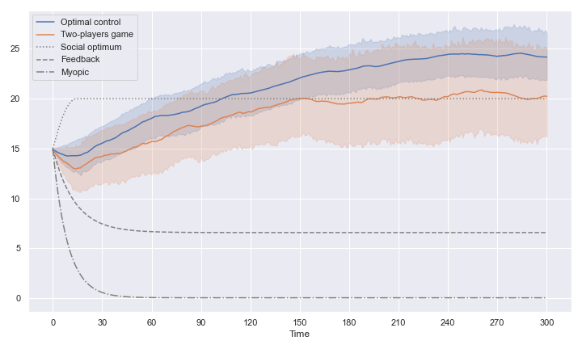
Player Behavior Profiles
We also considered the conditional MSD (with respect to the \(t - 1\) resource level) and applied regressions to check that the coefficient of the conditional decisions corresponding to the lowest MSD was actually different from zero.
Optimal control problem
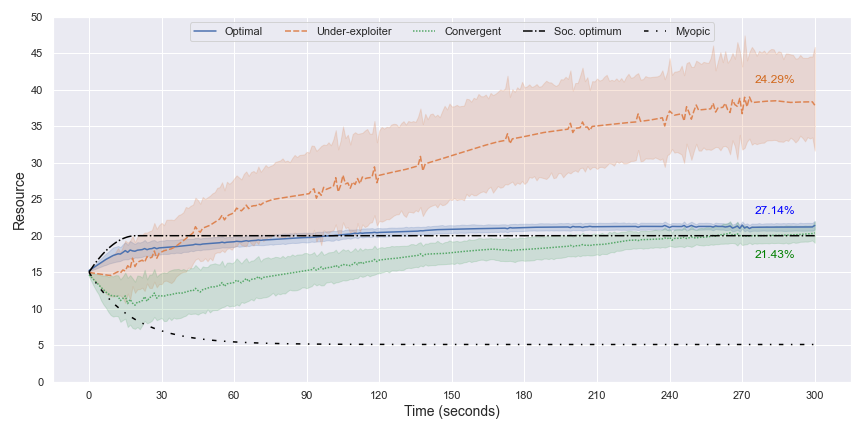
Game
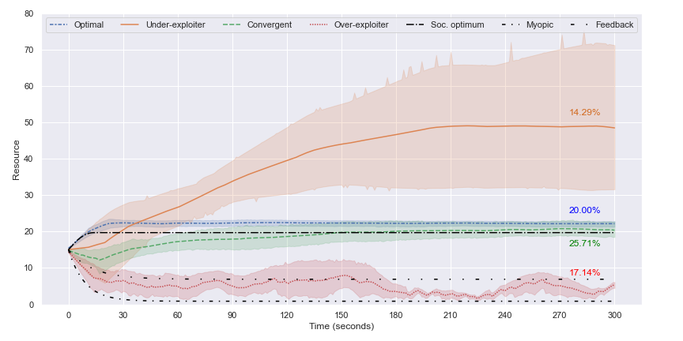
Group Composition and Game Outcome
Davin, M., Dubois, D., Erdlenbruch, K. & Willinger, M.
Threshold Effects in Resource Management - Examining the impact of an exogenous depletion threshold on resource sustainability. If the resource stock falls below this threshold, it will not renew, making extraction impossible.
Impact of Predetermined Shocks on Resource Growth - Studying the effects of a shock at a fixed or random date on resource availability. The shock reduces resource growth, simulating environmental changes like reduced rainfall.
Hauser, Rand, Peysakhovich, Nowak (2014, Nature)
Social optimum: 10 units per player
Individual temptation: 20 units
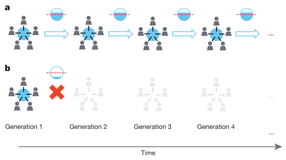
Bayle, G., Pinçon, V., Barragan-Jason, G., Bazart, C., Ibanez, L., Roussel, S., Syssau-Vaccarella, A., Dubois, D., Willinger, M.
Does intragenerational conflict undermine cooperation with the future?
We disentangle: - Intergenerational dilemma: present vs. future.
- Intragenerational dilemma: conflict among current individuals.
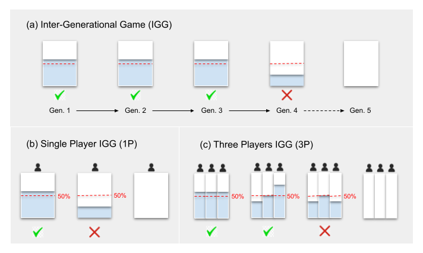
260 participants (137 in 1P and 123 in 3P).
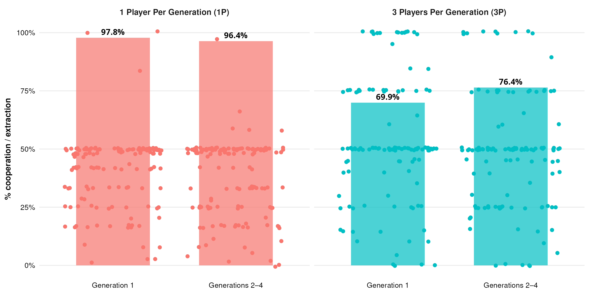
Cooperation = 1 if extraction ≤ 30 units (renewal threshold), 0 otherwise.
⇒ With contemporaries, cooperation collapses.
| Cooperation | Extraction (%) | |
|---|---|---|
| 1P × Gen 1 (réf.) | 12.702\(^{***}\) | 0.412\(^{***}\) |
| 3P vs 1P | -4.566\(^{*}\) | 0.113\(^{***}\) |
| Gen 2–4 vs Gen 1 | -1.840 | -0.039\(^{***}\) |
| Interaction (3P × Gen 2–4) | 4.688\(^{*}\) | |
| Num. Obs. | 520 | 520 |
Note: \(^*\) p < 0.05, \(^{**}\) p < 0.01, \(^{***}\) p < 0.001
Monte Carlo (10 000 trajectories) to estimate the expected survival of the resource over five generations.
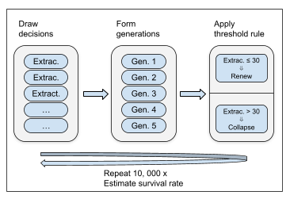
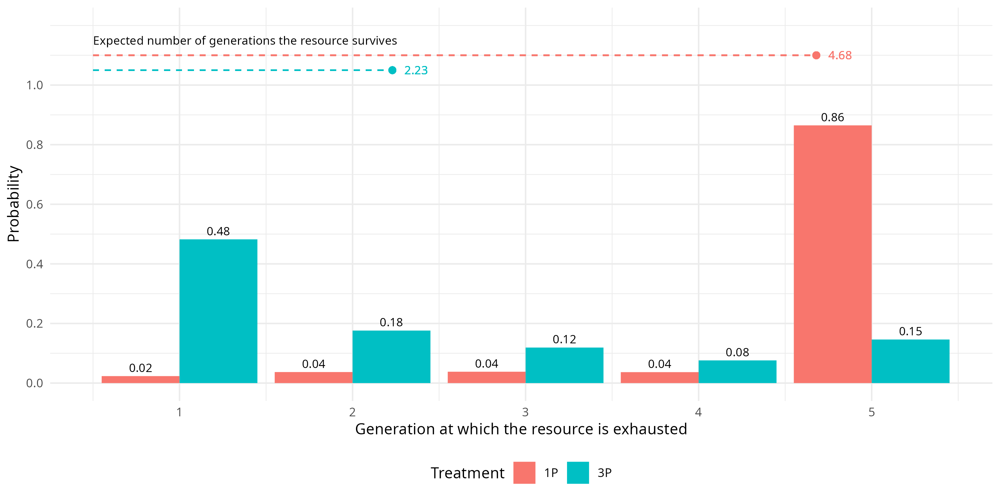
⇒ Intragenerational conflict drastically reduces resource sustainability.
Barragan-Jason, G., Bayle, G., Bazart, C., Dubois, D., Ibanez, L., Pinçon, V., Roussel, S., Syssau-Vaccarella, A., Willinger, M.
Can behavioral framings (primings / nudges) restore concern for the future?
Priming: subtle activation of concepts, norms, or emotions that influence later behavior (Bargh 1994, Bargh et al. 1996, Bargh & Chartrand 2000).
Framing: explicit presentation of information that shapes how individuals interpret and respond to a choice (Tversky & Kahneman 1981, Levin et al. 1998).
Nudges: subtle changes in the choice architecture that alter behavior without forbidding options (Thaler & Sunstein, 2008).
| Priming | Framing | Nudge | |
|---|---|---|---|
| Definition | Implicit activation of concepts or norms | Explicit presentation shaping interpretation of a choice | Contextual modification steering behavior without constraint |
| Cognitive level | Mostly unconscious | Conscious interpretation | Conscious / semi-conscious |
| Focus | Perception & associations | Meaning & perspective | Actual choice behavior |
| Priming | Framing | Nudge | |
|---|---|---|---|
| Example | Reading “future generations” primes prosocial thinking | Framing extraction as “for 2100” or “for your descendants” | Changing default extraction or payoff display |
| Discipline | Cognitive psychology | Cognitive + behavioral economics | Behavioral public policy |
Framing acts as a bridge between priming and nudging:
it shapes how people think about the choice rather than what choices they face.
Different Framing messages
Common message (all treatments): (on the decision screen)
Common resources, such as fish stocks or forests, are renewable — but they can be depleted if not managed sustainably. When we extract too much, these resources cannot regenerate and may disappear permanently.
Control: No additional message.
Near future and Close kin > Adopting responsible practices helps preserve these valuable resources for > — Future generations (up to 2100) > — Your close descendants (up to 2100)
Self-projection treatment (screen before decision screen)
Before making their extraction decision, participants were asked to imagine themselves as members of the next generation:
“If you belonged to the next generation, what amount of the resource would you want your generation to extract?”
They were reminded that they did not know their actual generation (1, 2, 3, 4, or 5), the goal was to mentally adopt the perspective of those who will face the consequences.
Close kin > Near future > Control
Self-projection > Control
Future framing ? self-projection
371 participants (123 in Control, 68 in Near future, 69 in Close kin, 111 in Self-projection).
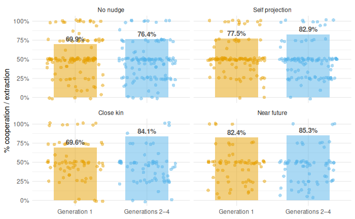
| Num. Obs. 742 — (371 × 2) | Cooperation | Extraction (%) |
|---|---|---|
| No nudge (Gen 1) | 0.843\(^{***}\) | 0.532\(^{***}\) |
| Self projection (Gen 1) | 0.392 | –0.002 |
| Close kin (Gen 1) | –0.017 | –0.012 |
| Near future (Gen 1) | 0.697\(^{+}\) | –0.071\(^{*}\) |
| No nudge (Gen 2–4) | 0.333 | –0.054\(^{**}\) |
| Self projection (Gen 2–4) | 0.009 | 0.002 |
| Close kin (Gen 2–4) | 0.503 | –0.026 |
| Near future (Gen 2–4) | –0.115 | 0.023 |
Note: \(^+\) p < 0.1, \(^{*}\) p < 0.05, \(^{**}\) p < 0.01, \(^{***}\) p < 0.001
Monte Carlo (10 000 trajectories).
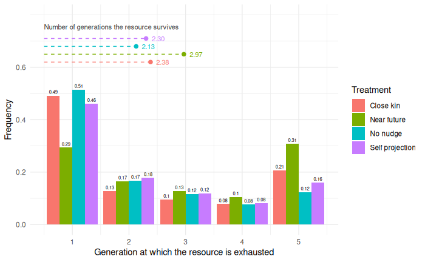
Based on Costello et al. (2015)
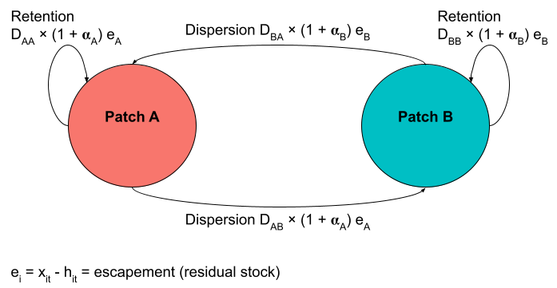
Flow of resources between two patches
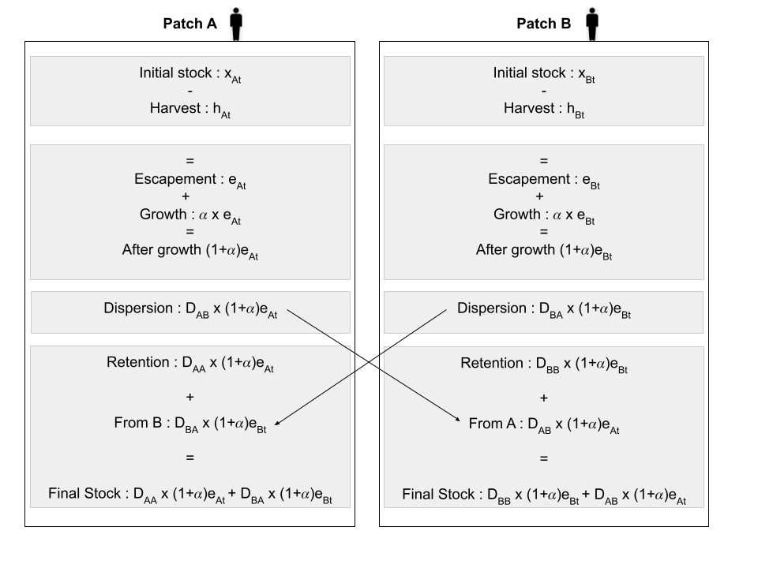
Screenshot
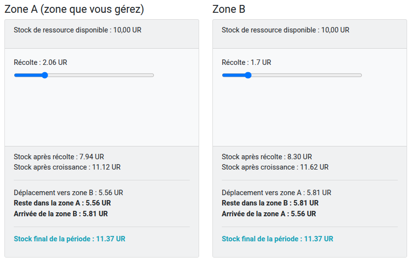
Bayle, G., Dubois, D., Beaud, M., Willinger, M. & Querou, N..
Efficient path: Maximizes the aggregate payoffs in both patches over the entire time horizon ⇒ Since \(\alpha > 0\) the resource is conserved in both patches (zero harvest) up until the last period and entirely extracted in the last period.
Decentralized (non cooperative) solution: The subgame perfect Nash equilibrium (SPNE) depends on the marginal productivity of the patch and the number of players managing the patch
Patch marginal productivity: retention rate × growth factor → \(D_{ii} \times (1 + \alpha)\)
H1 : Higher resource mobility decreases overall management efficiency and increases the likelihood of over-exploitation.
High resource mobility implies low marginal productivity for the patch.
H2 : Single manager systems are more efficient and sustainable compared to multiple manager systems.
If 2 players in patch B, even in case of a high marginal productivity they mine the resource in their patch.
H1 : Higher resource mobility (lower retention rate) decreases overall management efficiency and increases the likelihood of over-exploitation
⇒ Total resource harvest with Dij = 0.25 > Dij = 0.50 and Dij=0.75
H2 : Single manager systems are more efficient and sustainable compared to multiple manager systems
⇒ Total resource harvest in the single player configuration (1A-1B) > (1A-2B)
Screenshot (1A-2B)
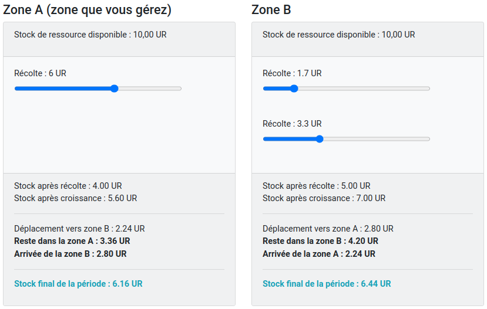
| Players per Group | # Participants | Mobility Order | # Groups |
|---|---|---|---|
| 2 | 126 | 50% - 25% - 75% | 22 |
| 25% - 50% - 75% | 21 | ||
| 75% - 50% - 25% | 20 | ||
| 3 | 168 | 50% - 25% - 75% | 18 |
| 25% - 50% - 75% | 20 | ||
| 75% - 50% - 25% | 18 |
Higher resource mobility decreases overall management efficiency (H1) and single manager systems are more efficient than multiple manager systems (H2).
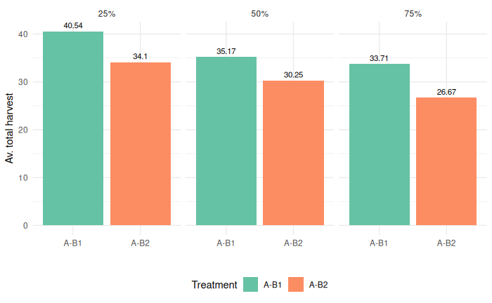
| Num. Obs. 357 | Total harvest |
|---|---|
| Intercept (A-B1 & 50%) | 35.167*** |
| A-B2 | -4.912** |
| Mobility: 25% | 5.372** |
| Mobility: 75% | -1.452 |
| Interaction A-B2 & 25% | -1.529 |
| Interaction A-B2 & 75% | -2.137 |
| R2 | 0.175 |
| R2 Adj. | 0.164 |
\(^+\) p < 0.1, \(^*\) p < 0.05, \(^{**}\) p < 0.01, \(^{***}\) p < 0.001
Implications - Emphasize the importance of coordinated management practices to mitigate the negative effects of resource mobility. - Support the implementation of property rights or centralized management to enhance resource sustainability.
G. Bayle, D. Dubois, M. Beaud, M. Willinger & N. Quérou
How should exclusive vs. shared property rights be allocated in environments with heterogeneous resource productivity?
The property regime is defined by the number of players per patch: - 1 player (patch A) → Exclusive rights - 2 players (patch B) → Shared rights
Location of high productivity: - \(A_h\): high productivity in exclusive patch (A) - \(B_h\): high productivity in shared patch (B)
⇒ Do productive zones perform better under exclusive or shared** management?**
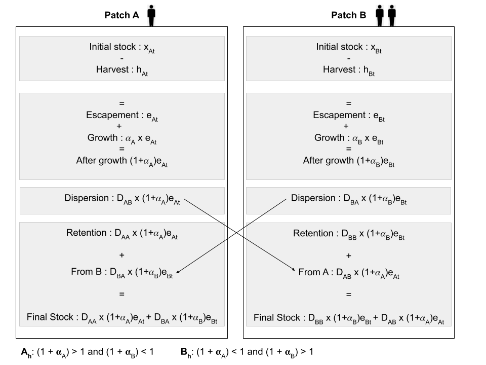
Efficient path: maximizes total payoff over time Players should let the resource grow and harvest everything in the last period ⇒ No extraction in \(t < T\), full harvest in \(t = T\)
Decentralized (non-cooperative) behavior: Players anticipate others’ overharvesting ⇒ early and excessive extraction to preempt rivals and secure payoffs
When high productivity is managed by a single player, the player can afford to be patient → behavior close to the efficient path
When high productivity is managed by two players, they may rush to extract early to outcompete each other → behavior deviates from the efficient path, leading to over-extraction. This externality affects the other patch through resource mobility.
| Treatment | Behavior in high-prod. patch | Efficiency |
|---|---|---|
| \(A_h\) (exclusive) | Conservation until \(t = T\) | Higher |
| \(B_h\) (shared) | Early extraction | Lower |
⇒ Exclusive rights in high-productivity areas should lead to better resource management
Patch productivity = Retention × Growth factor
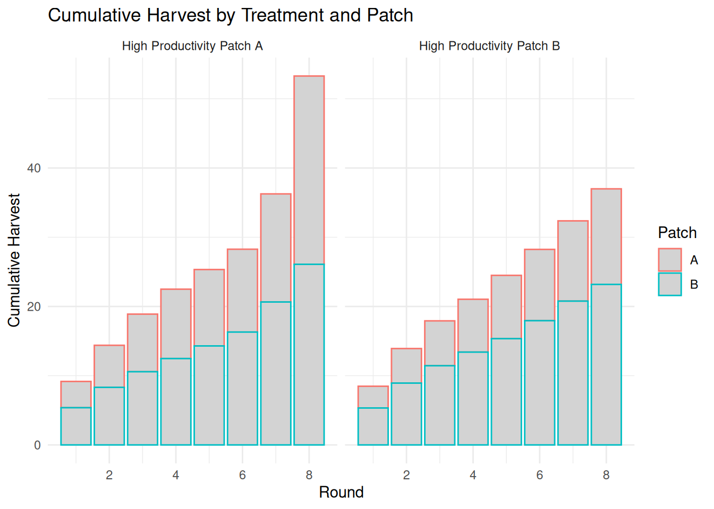
Total harvest is higher in \(A_h\) than in \(B_h\) – Mann-Whitney test p<0.05
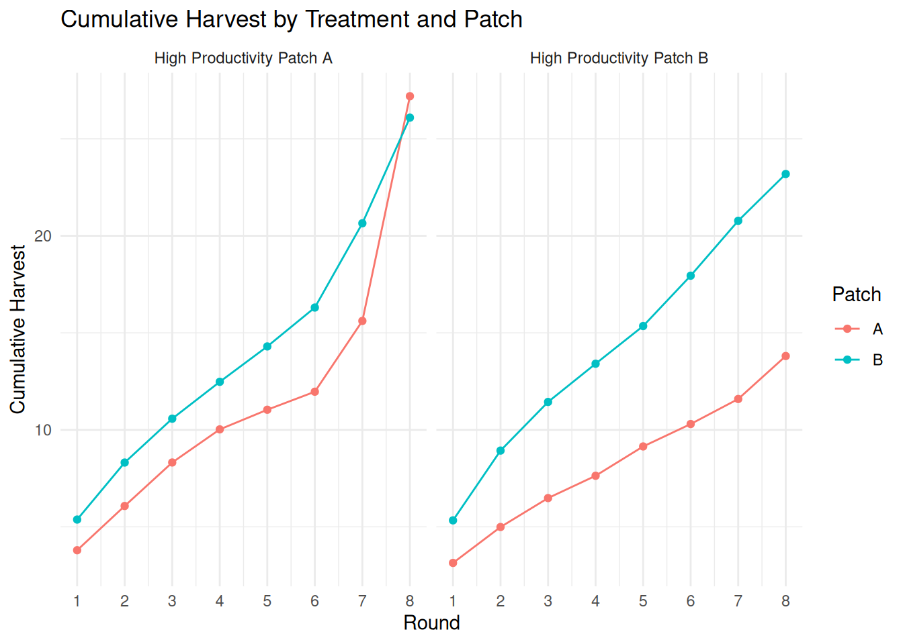
| Num. Obs. 1456 | Harvest |
|---|---|
| Patch A x Ah | 2.849*** |
| Patch A x Bh | -1.674*** |
| Patch B x Ah | -0.138 |
| Patch B x Bh | 1.311* |
| Round number | 0.122+ |
| R2 Marg. | 0.013 |
| R2 Cond. | 0.041 |
Compared to Patch A x \(A_h\) (ref.): - Patch A x \(B_h\): −1.67 units (p < 0.001) → Lower harvest in Patch A when high productivity moves to patch B - Patch B x \(B_h\): +1.31 units (p = 0.037) → Negative effect of the high productivity on patch B (\(B_h\)) is mitigated in Patch B (-1.67 + 1.31 = -0.36)
⇒ Assigning high productivity to Patch B (\(B_h\)) significantly reduces harvest in Patch A. However, this effect is substantially moderated in Patch B, where the harvest remains nearly stable.
Two agents \(i\) and \(j\) exploit a renewable resource \(H(t)\) (e.g., groundwater).
Each player’s instantaneous profit is: \[
\pi_i(H, w_i) = a w_i - \frac{b}{2}w_i^2 - \max(0, c_0 - c_1 H)\, w_i
\]
The dynamics of the resource stock are: \[
\dot{H}(t) = R - \alpha (w_i + w_j), \qquad H(0) = H_0,
\] where \(R > 0\) is the natural recharge, and \(\alpha > 0\) the return flow coefficient.
The discount rate is \(r > 0\).
The planner maximizes the joint discounted net payoffs of both players: \[ \max_{\{w_i(t), w_j(t)\}_{t \ge 0}} \int_0^{\infty} e^{-rt} \left[ \sum_{k \in \{i,j\}} \left( a w_k - \frac{b}{2}w_k^2 - \max(0, c_0 - c_1 H)\, w_k \right) \right] dt \] subject to: \[ \dot{H}(t) = R - \alpha (w_i + w_j) \]
\[ \mathcal{H}^S = \sum_{k \in \{i,j\}} \left( a w_k - \frac{b}{2}w_k^2 - \max(0, c_0 - c_1 H)\, w_k \right) + \lambda^S \big(R - \alpha (w_i + w_j)\big) \]
\[ \frac{\partial \mathcal{H}^S}{\partial w_i} = a - b w_i - \max(0, c_0 - c_1 H) - \alpha \lambda^S = 0, \] \[ \dot{\lambda}^S = r \lambda^S - \frac{\partial \mathcal{H}^S}{\partial H} = r \lambda^S - \sum_{k \in \{i,j\}} \frac{\partial}{\partial H} \big[\max(0, c_0 - c_1 H)\, w_k \big]. \]
In symmetric equilibrium (\(w_i = w_j = w^S\)): \[ \dot{H} = R - 2 \alpha w^S, \qquad a - b w^S - \max(0, c_0 - c_1 H) - \alpha \lambda^S = 0. \]
Each player \(i\) maximizes his own discounted payoff, anticipating the other’s feedback rule \(w_j(H)\): \[ \max_{\{w_i(t)\}_{t \ge 0}} \int_0^{\infty} e^{-rt} \left[a w_i - \frac{b}{2}w_i^2 - \max(0, c_0 - c_1 H)\, w_i \right] dt \] subject to: \[ \dot{H} = R - \alpha (w_i + w_j(H)). \]
\[ \mathcal{H}_i^F = a w_i - \frac{b}{2}w_i^2 - \max(0, c_0 - c_1 H)\, w_i + \lambda_i^F \big(R - \alpha (w_i + w_j(H))\big) \]
\[ \frac{\partial \mathcal{H}_i^F}{\partial w_i} = a - b w_i - \max(0, c_0 - c_1 H) - \alpha \lambda_i^F = 0, \] \[ \dot{\lambda}_i^F = r \lambda_i^F - \frac{\partial \mathcal{H}_i^F}{\partial H} = r \lambda_i^F - \frac{\partial}{\partial H}\big[\max(0, c_0 - c_1 H)\, w_i \big] - \lambda_i^F \alpha \frac{dw_j(H)}{dH}. \]
In symmetric equilibrium (\(w_i = w_j = w^F(H)\)): \[ \dot{H} = R - 2 \alpha w^F(H), \qquad a - b w^F(H) - \max(0, c_0 - c_1 H) - \alpha \lambda^F = 0. \]
At each instant, players maximize only their payoff, taking \(H\) as given.
\[ \max_{w_i \ge 0} \; a w_i - \frac{b}{2}w_i^2 - \max(0, c_0 - c_1 H)\, w_i. \]
\[ a - b w_i - \max(0, c_0 - c_1 H) = 0 \quad \Rightarrow \quad w_i^M(H) = \frac{a - \max(0, c_0 - c_1 H)}{b}, \quad w_i^M \ge 0. \]
If \(H \ge \frac{c_0}{c_1}\) (zero cost), then: \[ w_i^M = \frac{a}{b}. \]
The exponential function \(e^{-\rho t}\) is used in continuous-time discounting because it has key mathematical and economic properties:
Stationary discounting:
Its decay rate is proportional to its current value:
\(\frac{d}{dt} e^{-\rho t} = -\rho e^{-\rho t}\)
→ No memory, time-consistent discounting.
Limit of discrete discounting:
\(\lim_{n \to \infty} \left(1 + \frac{r}{n}\right)^{-nt} = e^{-rt}\)
Simplifies dynamic optimization:
\[
\int_0^\infty e^{-\rho t} G(t) dt \quad \text{is tractable and interpretable.}
\]
Avoids abrupt changes:
Smooth and continuous decrease of value over time.
Future payoffs are worth less today, at a continuously decreasing rate.
Topics in Behavioral and Experimental Economics